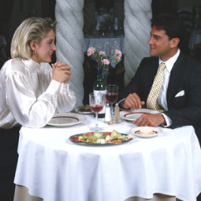

Come dine with us tonight
Cafe Fontenebleau features a magical combination of excellent cuisine and musical entertainment. The finest pasta, seafood, veal and certified Angus steaks are served to you by the most talented waiters anywhere. Nightly entertainment features favorites from Broadway musical theatre, Grand Opera, and Neapolitan folk songs performed by our talented musical staff. Cafe Fontenebleau offers the largest selection of Italian wines in California, and is the proud recipient of numerous awards from Wine Tasting Magazine.
Special Events
We were selected as one of Paris Magazine's top 200 restaurants for the last 8 years! Cafe Fontenebleau restaurant is music to your ears, be it an intimate dinner for 2 or a banquet for up to 200. We want to share the elegant private dining room at the Cafe Fontenebleau flagship restaurant with you! Set in a unique, historic building in Paris, our private dining room is available to host your corporate events, parties, weddings, and more. Our special events manager, sommelier, and executive chef will work with you to make sure your special event is truly special. We offer multiple menu options, or we can customize a menu for you. In keeping with the award-winning cuisine and exceptional service you expect, we provide place cards, personally printed menus, and candles. We are also happy to help you arrange other services.